Eye-NAV
Assistive Navigation AI
Eye-NAV
AI Assistive Navigation
TAP TO START
Eye-NAV Active
🟢
ALL CLEAR
TAP TO STOP
Waiting for AI response…
Developer Mode
Video Feed
System Profiler
🟢
ALL CLEAR
SERVER FPS
—
UI FPS
—
TOTAL LATENCY
—
BOTTLENECK
—
AI Response
Awaiting response…
Depth Estimation
Min—
Mean—
Max—
Speech Log
Detected Objects (0)
No objects detected.
Data Source: MOCK
⚙️
Settings
Companion Mode
Distance Estimation
Descriptive Mode
Developer Mode